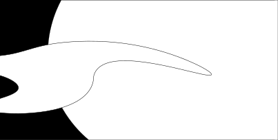
Hay una piedra. Es plana y pulida y puedo esconderla entre el pulgar y el índice. Tragarla, más chica que una moneda, deslizada hasta la tráquea sobre mi lengua,
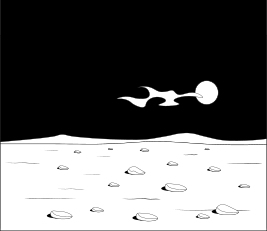
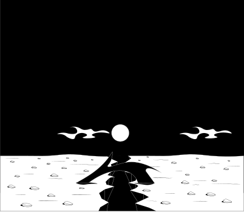
muy lento hasta sentirla alojarse en el centro, ese hueco entre clavículas. El aire se agota de a poco, abro y cierro la boca, la asfixia un pitido a la distancia,
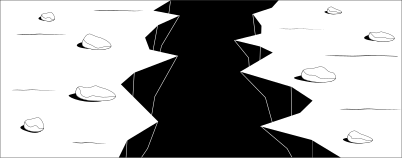
las manos caen en mi garganta, las piedras de la barranca en las rodillas como prótesis, la sirena una alarma que ocupa el vacío entre las cosas
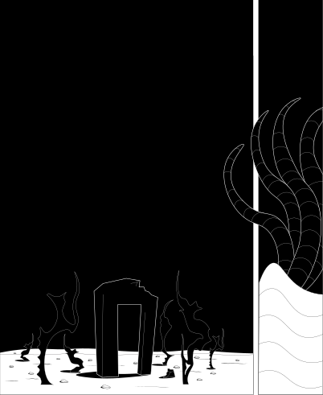
Las olas rompen suaves. Si se forma el paisaje por el que nunca dejamos de sentir nostalgia es porque aparece el perfil de la costa, una chancleta, un termo entre las rocas, astillas puntiagudas, veleros, el cañón, los pájaros y una voz desde un dial indescifrable. Bajá conmigo, hoy no voy a comer ninguna piedra. La aplasto entre dos dedos, la guardo, es un regalo.
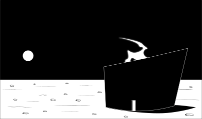
Llegamos hasta el mar para ahogarnos entre humo y palabras. Vení. Esta no es mi ciudad pero dejame mostrarte, cómo voy a construirla, un plan de restauración de los frentes de las casas, blancas, pulidas, sin dejar a plena vista tanto escombro y ladrillo, capas de pintura, graffitis desprolijos, montañas de basura. Voy a cortar al ras todas las construcciones, un horizonte nítido en paralelo al contorno del agua. Una obstinación por un orden programático y quirúrgico, todas las cosas ganan formas precisas desde muy lejos.
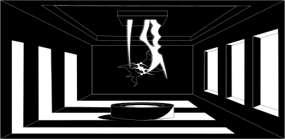
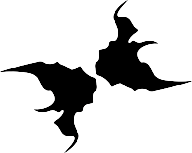
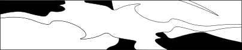
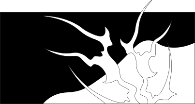
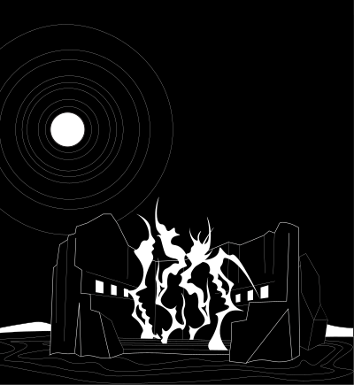
Caminemos. Cada roca es un asiento, una tecla o un reloj, esta historia inicia frente al agua en una piedra. En esta piedra refundamos todas las historias.